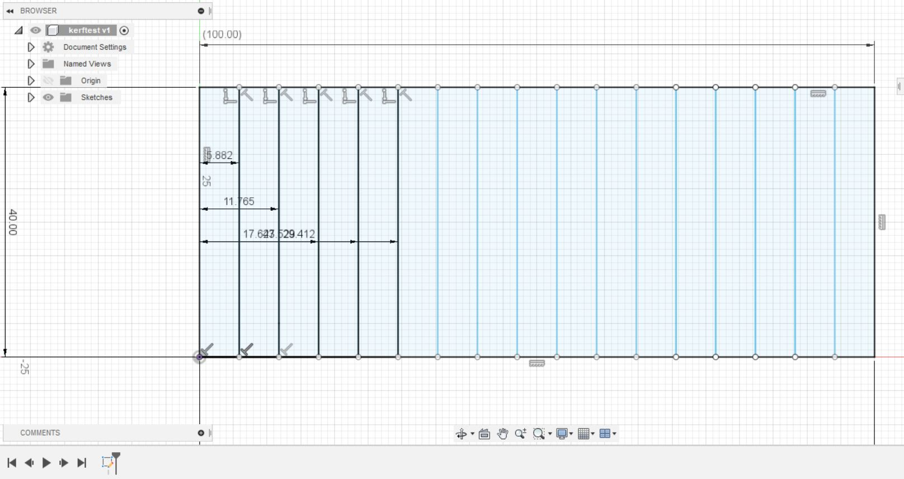
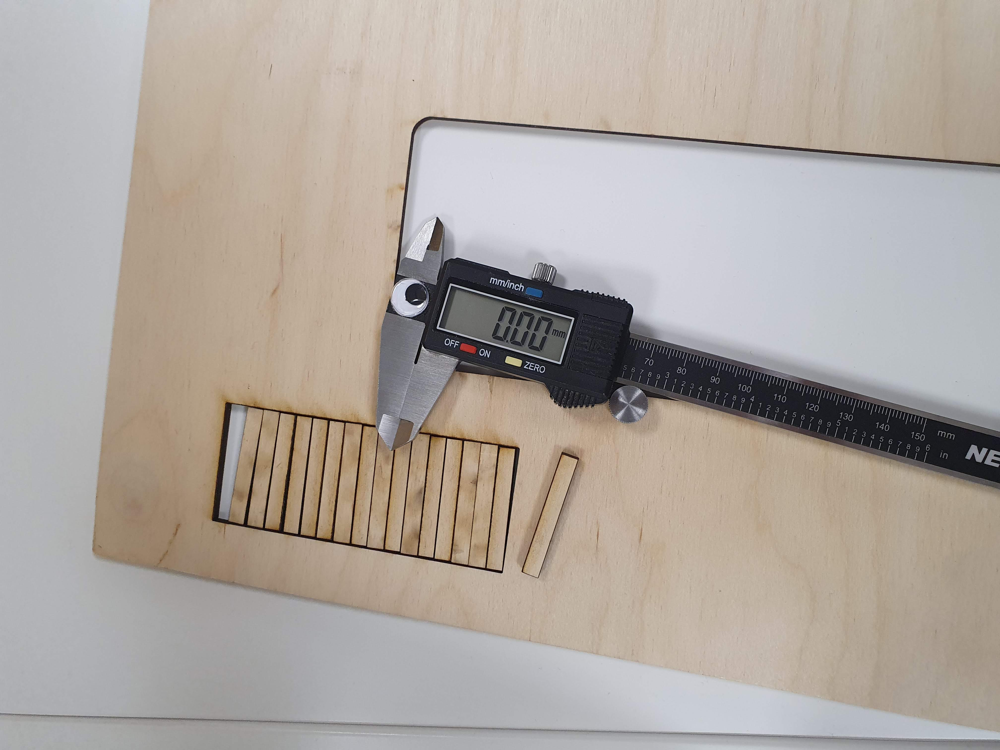

Project 2 - Kerf estimation
The objective
The objective of this group project was to estimate the kerf af a laser cutter using material tests.
Making the test model.
The model was very simple, a 100mm X 40mm box divided into 17 parts.
 The final result of the pdf file is:
Calculating the kerf
After the model is cut, one piece is taken out and a calliper is used to measure the gap formed. Then the piece we took out earlier is measured as well and since the number of lines is 18 (17 parts) the kerf is calculated as: (gap-width of one piece)/18. The kerf was estimated to be around 0.16mm.
